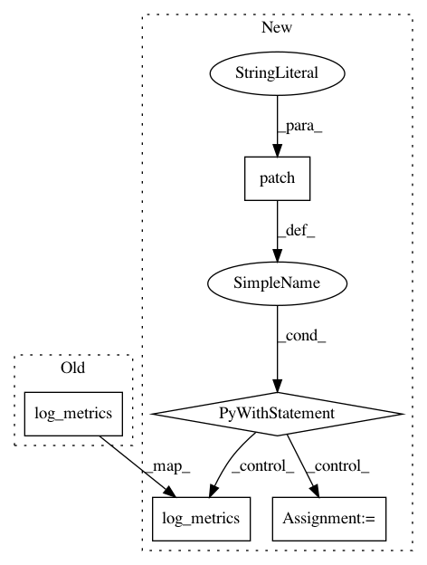

3866d7dc073ae983c7390bc5b1e604fea4360217,core/tests/test_tracking/test_run_tracking.py,TestRunLogging,test_log_multiple_metric,#TestRunLogging#,303
Before Change
results = V1Events.read(kind="metric", name="metric2", data=events_file)
assert len(results.df.values) == 1
self.run.log_metrics(step=2, metric1=1.1, metric2=21.1, metric3=12.1)
self.event_logger.flush()
assert (
os.path.exists(get_asset_path(self.run_path, kind=V1ArtifactKind.METRIC))
is False
After Change
results = V1Events.read(kind="metric", name="metric2", data=events_file)
assert len(results.df.values) == 1
with patch("polyaxon.tracking.run.Run._log_dashboard") as log_dashboard:
self.run.log_metrics(step=2, metric1=1.1, metric2=21.1, metric3=12.1)
assert log_dashboard.call_count == 1
self.event_logger.flush()
assert (
os.path.exists(get_asset_path(self.run_path, kind=V1ArtifactKind.METRIC))
In pattern: SUPERPATTERN
Frequency: 3
Non-data size: 5
Instances
Project Name: polyaxon/polyaxon
Commit Name: 3866d7dc073ae983c7390bc5b1e604fea4360217
Time: 2020-04-24
Author: mouradmourafiq@gmail.com
File Name: core/tests/test_tracking/test_run_tracking.py
Class Name: TestRunLogging
Method Name: test_log_multiple_metric
Project Name: polyaxon/polyaxon
Commit Name: 3866d7dc073ae983c7390bc5b1e604fea4360217
Time: 2020-04-24
Author: mouradmourafiq@gmail.com
File Name: core/tests/test_tracking/test_run_tracking.py
Class Name: TestRunLogging
Method Name: test_log_single_metric
Project Name: polyaxon/polyaxon
Commit Name: 3866d7dc073ae983c7390bc5b1e604fea4360217
Time: 2020-04-24
Author: mouradmourafiq@gmail.com
File Name: core/tests/test_tracking/test_run_tracking.py
Class Name: TestRunLogging
Method Name: test_log_empty_metric